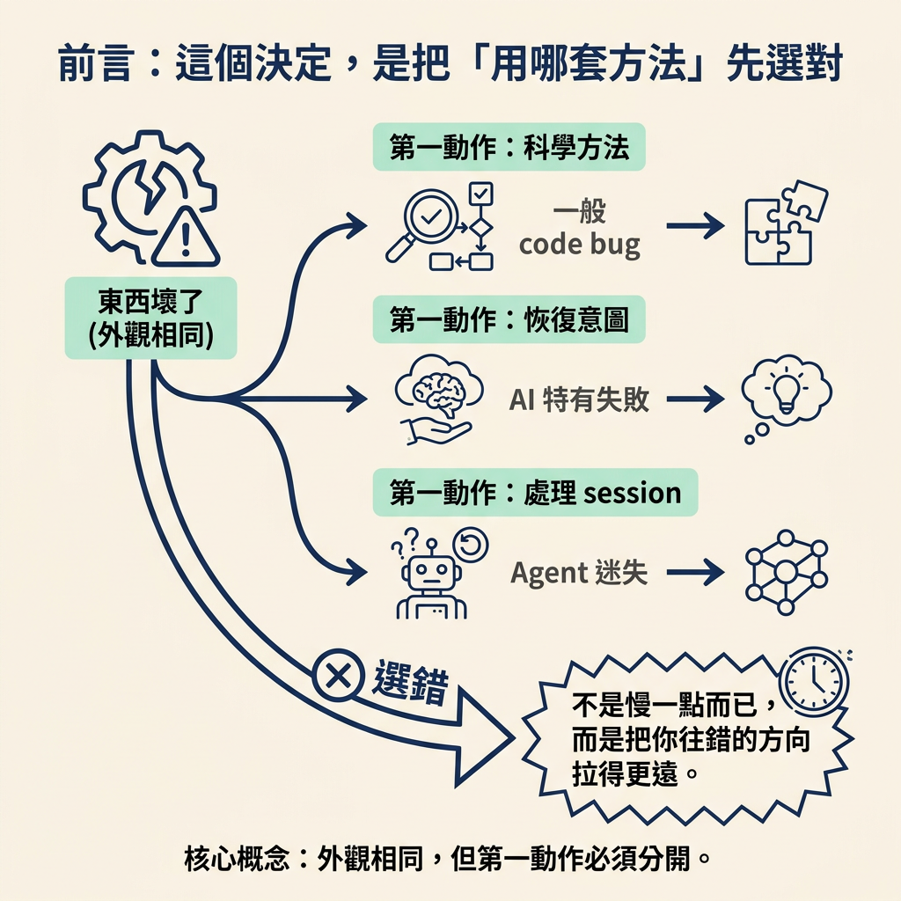
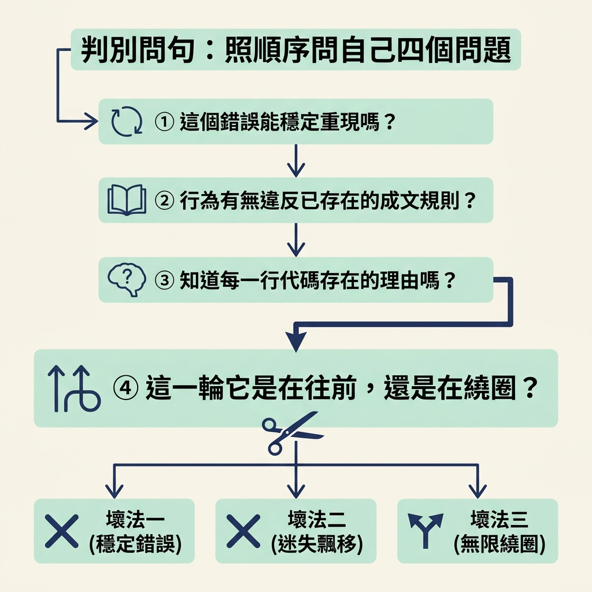

用每一種壞法的徵兆（可重現的錯誤、看似對卻悄悄出錯、原地打轉越改越糟）判斷自己面對哪一種，並選出對應的回應，同時說出選錯的代價。
上一節你已經拿到三種壞法：一般 code bug、AI 特有失敗、agent 迷失路徑。知道有三種之後，下一個要做的決定很具體——當東西壞在你面前，你要啟動哪一套回應？
這個決定之所以為難，是因為三種一開始長得很像：都是「東西壞了」，都會讓你覺得該趕快動手。張力就在這裡：外觀相同，但第一動作必須分開。選錯的那一套，不是慢一點而已，而是把你往錯的方向拉得更遠。

| 你看到的徵兆 | 是哪一種壞 | 對應的第一動作 | 選錯的代價 |
|---|---|---|---|
| 一個穩定、可重現、誰寫都一樣的錯誤 | 一般 code bug | 套科學方法：observe → hypothesize → test | 一直叫 agent 修它看不到的 bug，白白耗掉好幾輪 |
| 讀起來對卻悄悄算錯、呼叫不存在的函式、漏邊界、只有真實資料才爆 | AI 特有失敗 | 當成陌生人寫的 code 來讀，從 spec、周邊 code、實際行為恢復意圖 | 用「它應該是想……」去猜，結果在查你對 code 的猜想 |
| 原地重複、來回改同一批檔案、越改越糟卻很自信 | agent 迷失路徑 | 先處理 session：停、問它相信什麼、給更少、回滾、清掉 | 花一小時改 code，真正的問題是十輪前就搞丟了任務 |
這張表的重點不是「哪一種比較嚴重」，而是「回應不能互換」。你把 agent 迷失的 session 當一般 bug 修，改再多 code 也沒用；你把可重現的 bug 當成 session 問題去清掉，則會連它已經蒐集到的證據一起丟掉。
要在當下選得快，可以把上面的表換成一組可測試的問句。只要照順序問，答案通常會自己浮出來。
四個問題裡，最能一刀切開的是第四個。因為一般 bug 就算再難，它至少是穩定的；而迷失的 agent 會讓錯誤本身也跟著飄移——同一段 code 它改了又改，你根本追不上。

這套判準不是死的。下面幾種情況，錯的就是直覺，不是規則。
「可重現」不等於「就是一般 bug」。一個能穩定重現的錯誤，也可能是 agent 迷失造成的——它把 code 改成一個很穩定的錯。判準要看「是不是在繞圈」，而不是只看「能不能重現」。如果你已經改了三個小時、越改越糟，先把 agent 處理掉，再回來修那個現在穩定重現的 bug。
「偶爾才出現」也不等於「agent 迷失」。flaky 的 bug 一樣可以是一般 code bug，只是需要先加 instrumentation 讓它變可重現。不要因為它飄忽，就誤判成 session 問題去清對話。
範圍要守住。這個節點只深入第一種，也就是一般 code bug。第二種與第三種的完整解法在後面的節點；在這裡，你只需要認出它們，並知道自己該轉向，而不是硬套眼前這套方法。
分流的核心是：東西壞了，先問三件事——「可重現嗎？」「違反了哪條寫下來的規則嗎？」「這一輪在往前還是在繞圈？」可重現且誰寫都一樣，就是一般 code bug，走科學方法；有沒被遵守的意圖，偏 AI 特有失敗，要從 spec、周邊 code、實際行為恢復意圖；在重複、來回、越改越糟，就是 agent 迷失，先處理 session 再處理 code。選錯的代價各不相同，所以這個分流值得先花幾分鐘做。
分流完之後，這個節點只深入一條路：當答案是「一般 code bug」，接下來該怎麼做。下一節會把 observe → hypothesize → test 的科學方法，拆成你照著走就能用的六個步驟。